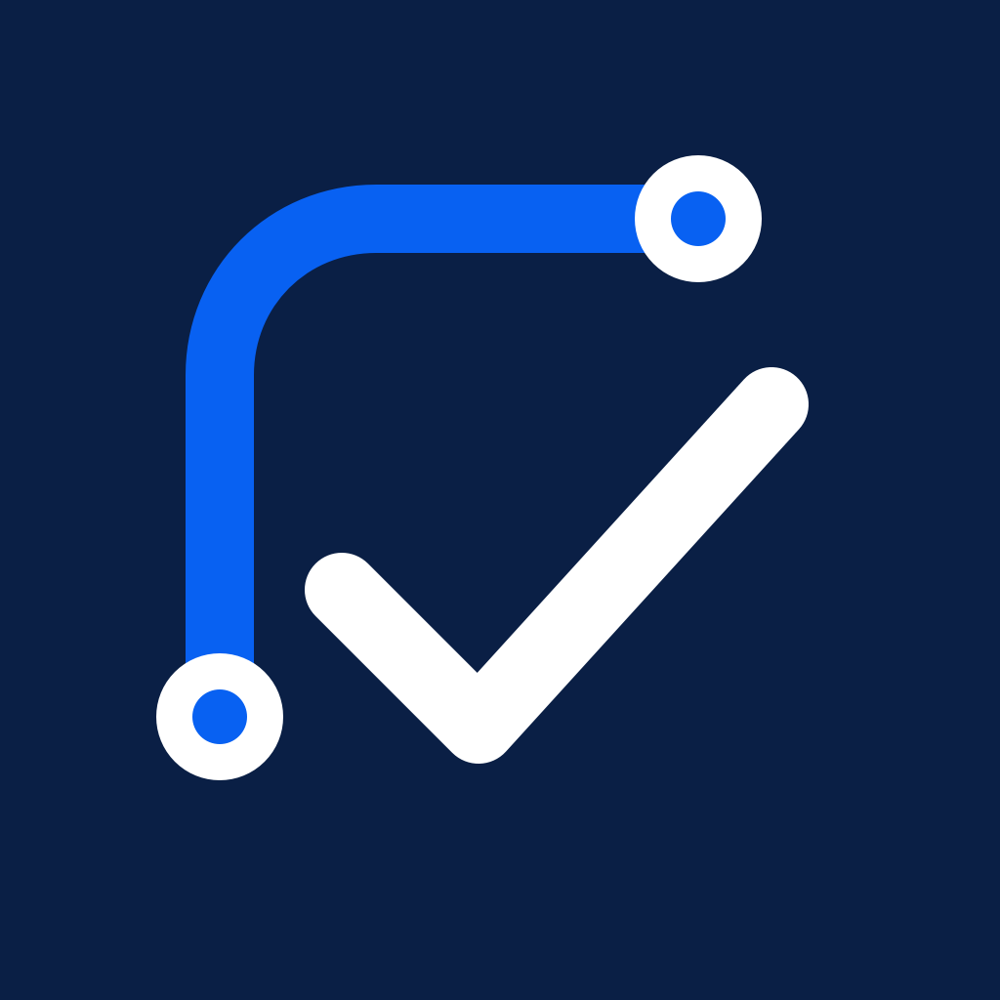

CommuteTick / 途刻
Every checkpoint, in time.
每一站，都有时刻。
Your route. Your record.
Record a driving commute, review each checkpoint's expected and actual time, explore personal history and share a moment or an entire route. A live map shows your current position while recording. Fixed-departure forecasts use your own comparable history when available.
For iPhone with iOS 18 or later. English and Simplified Chinese. Free, no ads, no app account. Optional iCloud Drive sync. This is a recorder, not a navigation service.
记下走过的路与每站时刻
记录自驾通勤，在实时地图查看当前位置，回顾各站预计与实际经过时间，并分享一个时刻或整趟行程。固定同一出发时间，用可比个人历史预估未来各天到站情况。
支持 iOS 18 及以上 iPhone，提供简体中文和英语。免费、无广告、无需应用账号，可选 iCloud 云盘同步。应用只记录，不提供导航。